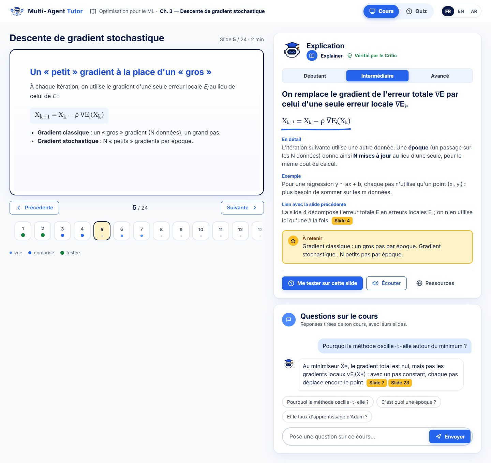

Une question du jeu d'évaluation
Pourquoi la descente stochastique à pas constant oscille-t-elle autour du minimiseur ?
Dépose un cours en PPTX ou PDF : six agents l'expliquent slide par slide sur trois niveaux, répondent en citant tes slides et te font réviser.
À gauche, la slide de ton cours ; à droite, l'explication au niveau que tu choisis : débutant, intermédiaire ou avancé, toujours reliée à ses slides.

Chaque étape est confiée à un agent spécialisé ; le Critic vérifie que tout ce qui est dit vient bien de tes slides.
Clique sur la carte pour la retourner.
Choisis une demande : le Router la confie au bon agent, puis le Critic vérifie la réponse avant qu'elle t'arrive.
Ta demande sur la slide 7
Un seul modèle de langage local fait tourner les six agents : aucune API, aucun envoi de ton cours.
En français et en anglais, avec 160 questions d'évaluation écrites et relues par l'équipe. Essaie l'une d'elles.
Pourquoi la descente stochastique à pas constant oscille-t-elle autour du minimiseur ?
Barres : part de chaque domaine dans les 47 cours.
Non. Le modèle de langage, la lecture des slides, la recherche et la voix tournent en local ; aucun service en ligne n'est appelé.
Des présentations PPTX et des PDF, y compris des slides scannées : le texte est alors lu par OCR.
L'interface et les réponses existent en français, en anglais et en arabe, avec une mise en page de droite à gauche pour l'arabe.
Le tuteur répond que l'information n'est pas dans ton cours plutôt que d'inventer, et propose une notion proche qu'il peut expliquer.
L'agent Critic relit chaque réponse et vérifie que ses affirmations sont appuyées par les slides citées. Sinon, la réponse repart vers l'agent avec les corrections, deux fois au plus.